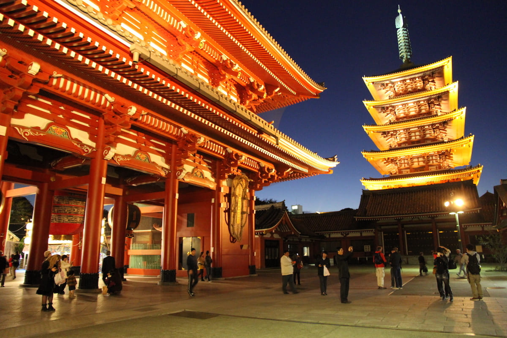
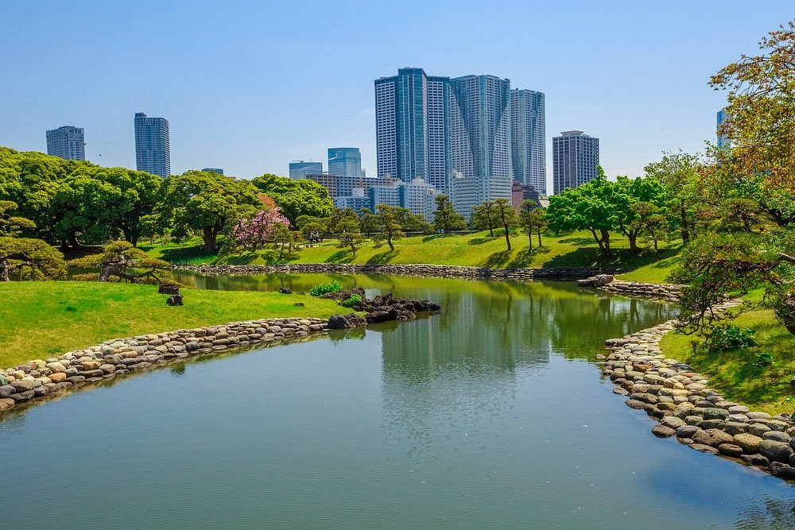

Guia de Turistas
Bienvenido, en este sitio web te mostraremos algunos detalles sobre el viaje que realizaremos hacia Japon el dia 05 de abril hasta el 11 de abril.


A continuacion, te mostraremos la lista de eventos los cuales vas a poder ser parte.
lunes, 05 de abril: Tendremos la oportunidad de ver el templo sensoj, disfrutando de sus vistas y haciendo actividades recreativas.
Martes, 06 de abril: Nos dirigiremos hacia los hermosos Jardines Hamarikyu, zona para poder relajarse y ver llos cultivos de aaroz que se hacen en dicha zona.
Miercoles 07, de abril: Seguiremos hacia Jiyugaoka, un barrio llenos de tiendas y restaurantes donde vas poder comprar todos los recuerdos que quieras.
Jueves, 08 de abril: monte Quinta estación de Fuji, cautivate con las magnificas Vistas que encontraras en este lugar.
Viernes, 09 de abril: Palacio Imperial de Tokio, el castillo del shogunato Tokugawa, que alguna vez fue la fortaleza más grande del mundo.
Sabado, 10 de abril: Lago Ashi (Ashi-no-ko), A la sombra del monte Fuji, el lago Ashi (Ashi-no-ko) es un lugar pintoresco en el Parque Nacional Hakone. Considerado sagrado por los japoneses, alberga el famoso santuario sintoísta de Hakone.
Domingo, 11 de abril: monte Fuji (Fuji-san), Como la montaña más alta de Japón, el legendario monte. Fuji (Fuji-san) mide 12,388 pies (3,776 metros) de altura.
Esperamos y disfrutes de tu estancia mientras viajas, recuerda ser respetuoso y cumplir con las reglas que se exigen en este tipo de zonas para evitar cualquie tipo de inconveniente